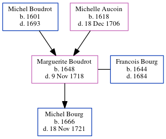

Marguerite Bourg (née Boudrot) 1648 - 1718
[ Home ] | [ Calendar ] | [ Surnames Index ] | [ Census Index ] | [ Family History ]The child of Michel Boudrot and Michelle Aucoin, Marguerite Boudrot, the 9 times great-grandmother of Michele Copp (née Phillips), was born in Port Royal, Acadia, Nova Scotia, Canada in 16481 and married Francois Bourg (with whom she had 1 child, MICHEL) in Port Royal, AN, Nova Scotia, Canada in 16651.
She died on Nov 9, 1718 in Annapolis Royal, , Nova Scotia.
Parents
- Michel was born in 1601
- Michelle was born in 1618
Children
- MICHEL was born in 1666
Citations
- U.S. and International Marriage Records, 1560-1900 Online publication - Provo, UT, USA: The Generations Network, Inc., 2004.Original data - This unique collection of records was extracted from a variety of sources including family group sheets and electronic databases. Originally, the information was deriv
Family Tree
Generated by ged2site. Last updated on Jun 6, 2024